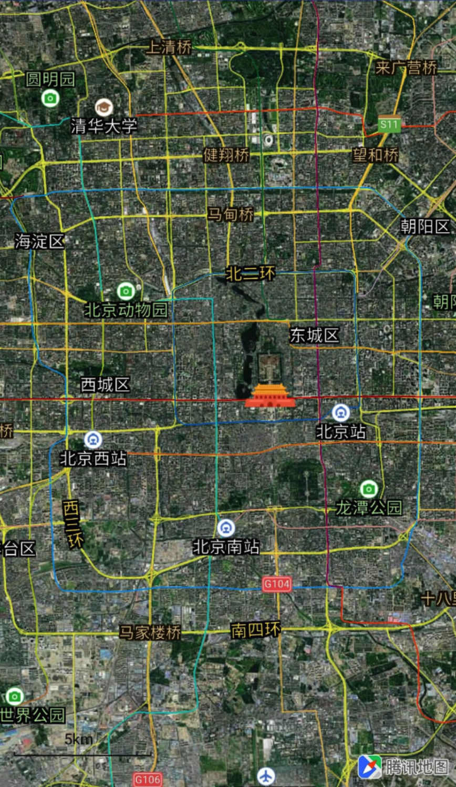

设置地图类型
腾讯地图SDK（iOS）提供2中类型的基本地图，具体如下：
地图类型(mapType)：
- QMapTypeStandard：标准地图
- QMapTypeSatellite：卫星地图
1. 标准地图与实时路况
标准地图的信息包括路网信息、建筑物及重要的自然景观；腾讯地图还提供了实时路况图层，可以为提供实时交通数据的城市展示实时交通状况，设置显示标准地图和实时路况的示例代码如下：
[self.mapView setMapType:QMapTypeStandard]; // 显示标准地图
self.mapView.showsTraffic = YES; // 开启实时路况
2. 卫星图
卫星地图设置：
[self.mapView setMapType:QMapTypeSatellite];
实时路况和卫星图的效果如下所示：

3. 个性化地图
腾讯 iOS 3D 地图 SDK自 v4.1.1起，支持使用个性化地图模版，通过选择不同的模版可实现底图配色风格的切换。
前往选择个性化地图模版，设定好模板后可根据地图模板ID切换个性化地图。
示例代码：
// 个性化地图的ID从 1 开始，具体数量依据个人配置为准
[self.mapView setMapStyle:1];